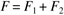
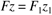
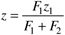
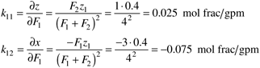
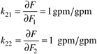
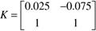
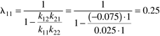
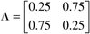

| [ Team LiB ] |
|
13.6 Return to the Motivating ExampleConsider Example 13-1, where 40% ethanol (stream 1) is being blended with pure water (stream 2) to produce a product of 30% ethanol. Here we wish to use the RGA to help us develop the control structure (pair inputs and outputs). We first develop the steady-state model, then linearize to find the process gain matrix, and finally calculate the RGA to decide on variable pairing. For simplicity we neglect density differences between the streams and components. Total Material BalanceNeglecting density differences between the streams and components, the total blend product volumetric flow rate is equal the sum of the volumetric flow rates of the two feed streams,  Component Material Balance on EthanolAssume a binary system with z1 = volume fraction of ethanol in stream 1. Let z = volume fraction of ethanol in the blend stream. Since there is no ethanol in the water stream, we find  Solving these equations for the volume fraction of ethanol in the blend stream,  Let the volume fraction of ethanol be output 1 and total flow rate output 2. Also, inputs 1 and 2 are the flow rates of the whiskey and water feedstreams, respectively. The following steady-state values were used in Example 13.1: F1 = 3 gpm, F2 = 1 gpm, z = 0.3 mole fraction ethanol, and F = 4 gpm. The steady-state input-output gains are   which yields the process gain matrix  The relative gain relating input 1 to output 1 is  This value of 0.25 indicates that the effective gain relating input 1 to output 1 with loop 2 closed is four times the value of the gain with loop 2 open. This explains the result shown in Figure 13-11. The RGA is then  which indicates that the blend total flow (y2) should be paired with the whiskey flow rate (u1) and the blend ethanol concentration (y1) should be paired with the water flow (u2). Notice that the largest component stream flow rate then controls the total flow. |
| [ Team LiB ] |
|